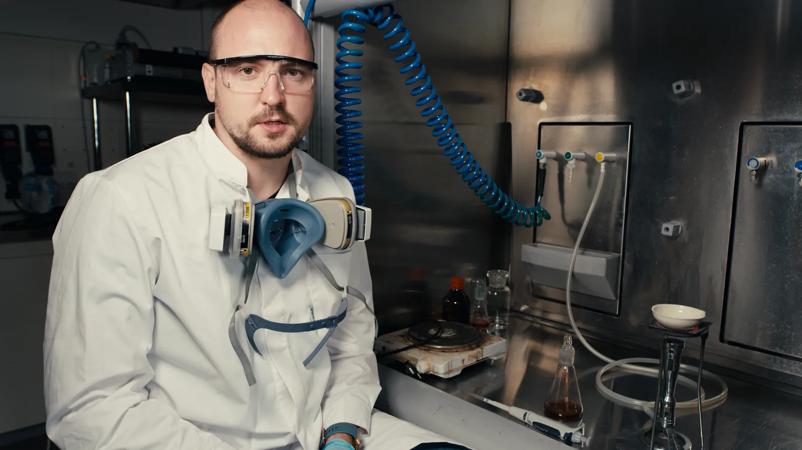
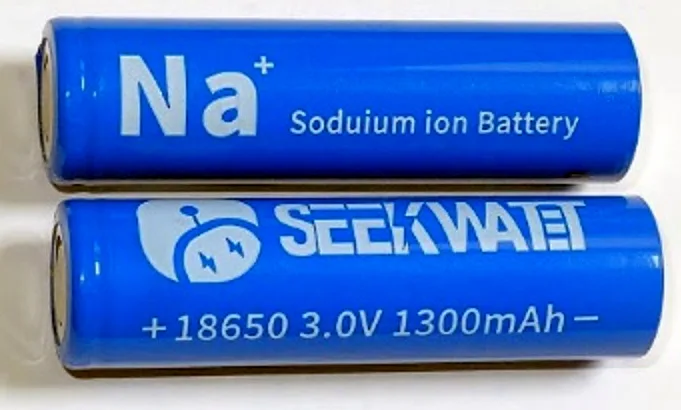

▲ 배터리 연구 현장(자료사진). 전 세계 EV 배터리 사용량은 2025년에 이미 처음으로 1TWh를 넘어섰다 ⓒ Wikimedia Commons
1테라와트시(TWh)는 1,000기가와트시, 즉 10억 킬로와트시다. 전기차 한 대의 배터리 용량이 보통 60~100킬로와트시 안팎인 것을 감안하면, 1TWh는 전기차 약 1,000만~1,600만 대 분량의 배터리에 해당하는 규모다. 그런데 이 문턱은 '2026년 전망'이 아니라 이미 2025년에 넘어선 숫자다. 시장조사업체 SNE리서치 집계에 따르면 2025년 1~12월 전 세계 전기차(EV·PHEV·HEV)용 배터리 사용량은 1,187GWh(약 1.19TWh)로, 전년 대비 31.7% 증가하며 사상 처음 1TWh를 돌파했다.
1. 1TWh가 실감 안 나는 이유

▲ 전기차 배터리팩. 개별 차량 단위로는 킬로와트시(kWh)로 세지만, 산업 전체로는 테라와트시(TWh) 단위가 쓰이기 시작했다 ⓒ CarPrism
일반 소비자에게 익숙한 단위는 킬로와트시다. 아이오닉5의 배터리가 몇 kWh인지, 테슬라 모델Y가 몇 kWh인지를 따지는 식이다. 그런데 이걸 전 세계 단위로 합산하면 이야기가 완전히 달라진다. 2025년 한 해 동안 전 세계에서 쓰인 전기차 배터리를 모두 더하면 1TWh, 즉 10억 kWh를 이미 넘어섰다는 뜻이다. 이는 전기차 산업이 더 이상 '틈새시장'이 아니라 거대 에너지 산업으로 자리 잡았다는 방증이다.
2. 성장은 계속된다 — 다만 속도는 예년만 못하다

▲ 나열된 배터리팩들(자료사진). 2025년 31.7%였던 증가율이 2026년 들어서는 10%대 중반으로 낮아졌다 ⓒ CarPrism
SNE리서치에 따르면 2025년 전 세계 EV 배터리 사용량은 전년 대비 31.7% 늘며 가파르게 증가했다. 반면 2026년 들어서는 성장세가 다소 완만해지는 모습이다. 2026년 1~4월 누적 사용량은 352.7GWh로 전년 동기 대비 13.8% 증가했고, 1~5월 누적으로는 469.2GWh, 전년 동기 대비 약 16.3% 증가로 집계됐다. 여전히 두 자릿수 성장이지만, 2025년의 30%대 증가율에는 못 미치는 속도다. 다만 CATL 등 상위 업체는 20%대 중반의 성장률을 유지하고 있어, 업체별 편차는 여전히 크다. 관련 월별·누적 수치는 SNE리서치 홈페이지에서 확인할 수 있다. SNE리서치 2025년 연간 집계 바로가기
3. 누가 이 성장을 이끄는가

▲ 지리가 전시한 배터리팩 시스템. 중국 업체들의 생산 확대가 글로벌 배터리 사용량 증가를 견인하고 있다 ⓒ 지리자동차
지역별로는 유럽과 중국이 배터리 사용량 증가를 견인하는 두 축으로 꼽힌다. 유럽은 강화된 CO2 규제에 맞춰 전기차 판매 비중을 늘리고 있고, 중국은 여전히 세계 최대 전기차 시장 지위를 유지하고 있다. 반면 미국은 세액공제 폐지 여파로 성장세가 상대적으로 둔화되며, 지역별 온도차가 이 성장의 이면에 자리하고 있다.
4. 산업에 어떤 의미인가
2026년에도 누적 사용량은 계속 불어나는 중이다. 상반기까지의 흐름이 이어진다면 2026년 연간 사용량은 2025년의 1,187GWh를 웃돌아 1.3~1.4TWh 안팎에 이를 가능성이 있다. 다만 이는 아직 확정 통계가 아닌, 연중 누적 추이를 바탕으로 한 추정치라는 점에 유의할 필요가 있다.

▲ 나트륨이온 배터리 셀(자료사진). 대체 소재 기술 개발도 이 규모의 성장이 뒷받침하고 있다 ⓒ Wikimedia Commons (CC BY-SA 4.0)
배터리 사용량이 1TWh를 넘어선다는 것은 원자재(리튬·니켈·코발트 등) 수요, 생산 설비 투자, 재활용 인프라 등 배터리 밸류체인 전반에 걸쳐 규모의 경제가 본격화된다는 뜻이다. 동시에 원자재 가격 변동이 완성차 가격에 미치는 영향력도 그만큼 커진다. 이는 앞서 다룬 '배터리팩 가격 15~20% 상승' 전망과도 직결되는 구조적 배경이다.
5. 정리
체크포인트
- 전 세계 EV 배터리 사용량은 2025년(1,187GWh)에 이미 처음으로 1TWh를 돌파했다(SNE리서치, 전년비 +31.7%).
- 2026년에도 성장은 이어지지만, 증가율은 10%대 중반으로 다소 둔화됐다(1~5월 누적 +16.3%).
- 유럽·중국이 성장을 이끌고 미국은 상대적으로 둔화됐다.
- 이는 배터리 산업 전반의 규모의 경제 본격화를 의미한다.